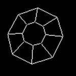
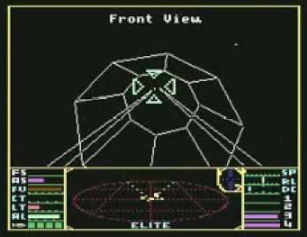
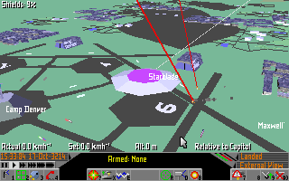
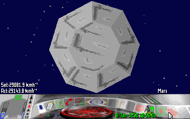
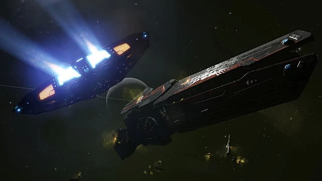

<section class="l-section"><div class="l-section-h i-cf"><p><strong>This is an archive of <a href="https://www.drewwagar.com/">Drew Wagar</a>&#8216;s lore guide, available here with his kind permission. Drew is no longer actively maintaining his lore pages, and they may not be accurate post v2.4 of Elite Dangerous.</strong></p>
<p><a ref="magnificPopup" href="https://canonn.science/wp-content/uploads/2017/10/Elite_Thargoid.png"></a>The Thargoids need little introduction to those well versed in Elite lore, but not all players of Elite: Dangerous may be au fait with their complete background. What I have attempted to do below is summarise information on the Thargoids and set it in context within the known game Lore (Elite, FE2, FFE and ED). There is a lot of fan produced content on the Thargoids, and I have deliberately not referred to it here. What is below is, as far as I’m aware, established canon. I reserve the right to edit this if I’ve missed something, or new information emerges.</p>
<h3>Summary</h3>
<p>Pre 3125 – Unconfirmed suggestions that some kind of covert war was started with Thargoids, ostensibly by a trigger-happy Fleet Commander in the Veliaze system.<br />
3125 – Thargoids alleged to be ‘ripping’ ships out of witchspace and destroying them. Thargoid ‘warzones’ widespread<br />
3200 – Thargoids reportedly retreat from human occupied space for reasons unknown<br />
3255 – Reason for Thargoid retreat was reported to be down to human-engineered ‘Mycoid’ virus which impacted their hyperdrive capability<br />
3302 – Reports of curious wrecks of unknown vessels.<br />
3303 – 8 sided alien ships rip CMDRs out of witchspace (hyperspace high wake), confirmed to be Thargoids after investigation by Professor Palin.</p>
<h3>First Appearance, the year is 3125.</h3>
<p><a ref="magnificPopup" href="https://canonn.science/wp-content/uploads/2017/10/Capture-1.png"></a>In the original game of 1984 the Thargoids appeared to be the classic villains of the piece, the indefatigable evil of the spaceways, plucking ships out of witchspace and despatching them far from the safe zones of human habitation. The year is 3125. The Thargoids make their first appearance in the original game manual, and are referenced as “Thargoid Invaders”. Later on we are informed that their “Captains have had their fear glands removed.” and are thus fearsome combateers.</p>
<p>An encounter in the original game was fast and brutal. You were lucky if you survived the experience. Thargoids ships were fast, heavily armed and deployed remote controlled ‘Thargons’ to supplement their fire power.</p>
<p>There were, reportedly, 50 war zones between humanity and this “insectoid” race. They were also believed to be able to “hover” in witch-space, ambushing human spacecraft whilst using their hyperdrives to travel between systems. It was speculated that they existed as a “group mind”. Thargoid spacecraft were large, swift and powerful with multi-axis symmetry. They had no obvious drive outlets as still required on human vessels, leading to speculation that Thargoids had mastered inertialess drive technology, otherwise known as the ‘spacedrive’. It appears that Thargoid technology was significantly more advanced than ours. In-game, Thargoids tended to ambush human players during hyperspace transits, pulling them out of witch-space and attempting to destroy you with no preamble.</p>
<p><a ref="magnificPopup" href="https://canonn.science/wp-content/uploads/2017/10/Old-thargoid-encounter.png"></a>They attacked on sight. Throughout the original game it was claimed we were “at war” with the Thargoids. Incidentally, it is alleged that ECM technology was reverse engineered from captured Thargoid ships and many other technologies may have also been Thargoid derived.</p>
<p>There was also another race mentioned in “The Dark Wheel”, known as the Oresrians. These were portrayed as a peaceful offset of the Thargoids, but very similar in overall appearance, albeit with a warning to Commanders to “Check the thorax markings and the shape of the fourth joint on each hind leg before jumping to conclusions.”</p>
<h3>75 years later. The year is 3200.</h3>
<div style="width: 330px" class="wp-caption alignleft"><a ref="magnificPopup" href="https://canonn.science/wp-content/uploads/2017/10/starblade.gif"></a><p class="wp-caption-text">A Thargoid Vessel in FE2</p></div>
<p>Curiously, by the time of the second installment of Elite (Frontier: Elite 2) the Thargoids appear to have retreated from human space almost completely. The only reported sightings of vessels within this timeframe were captured Thargoid vessels held at secret research bases across the galaxy. Other than these tantalising hints, it appeared that the Thargoids were gone. There was no record of them. They retreated from the war, they stopped ambushing ships. They had abandoned this area of the galaxy completely. We had no idea where they came from, what they wanted, where they had gone, or what they even looked like. They remained a complete mystery.</p>
<h3>Another 50 years passes. The year is 3250.</h3>
<p><a ref="magnificPopup" href="https://canonn.science/wp-content/uploads/2017/10/Thargoid_ship.gif"></a>Nothing new was heard of the Thargoids until the launch of the next game in the series, Frontier: First Encounters (FFE). Records indicate that the disappearance of the Thargoids might have been down to a covert operation undertaken by the Intergalactic Naval Reserve Arm (INRA). They had been infected by a virus and a particular type of virus at that. It was known as the ‘Mycoid’ virus, and it was produced by humans. The Thargoid hyperdrive technology was rendered useless (the virus attacked plastic polymers in the system) and there are indications that the Thargoids were also impacted, as their exoskeletons were composed of polymer like material. There were accusations that INRA committed genocide on the Thargoids. Regardless, the Thargoids disappeared. The report was dismissed as a conspiracy theory by leading political leaders.</p>
<h3>53 Years later. The year is 3303,</h3>
<p>Whilst alien wreckage had been spotted in various locations within Elite Dangerous, it wasn’t until January 5th that an encounter with an ‘live’ alien vessel occurred. Are these new ships the ‘Thargoids’ of old? Their similarity in behaviour, form and function to the old stories cannot be denied, but there are major differences too. Perhaps they could be the warlike Thargoids, the Oresrians, the Klaxians… or something else?<br />
The alien vessels in question were able to interdict a human vessel directly out of witchspace (hyperspace high wake) and disable them. The alien vessel directed a beam of energy at the beleaguered human ship which appeared to move it backwards and possibly scan it. The alien vessel then departed, employing an unknown form of hyperspace technology, rotating rapidly as it did so.</p>
<p style="text-align: center;"><iframe src="https://www.youtube.com/embed/slbWLXIpCv8" width="560" height="315" frameborder="0" allowfullscreen="allowfullscreen" data-mce-fragment="1"></iframe></p>
<p>Alien vessels were detected interacting with an outcrop of the ‘Barnacles’ on June 2nd, 3303, confirming suspicions that the two entities were linked in some form. It appeared that the alien ships were either extracting some material from the Barnacles, or possibly imparting something to the Barnacles. The precise nature of this interaction is unclear. The alien ships had similar debilitating impacts on vessels in the immediate vicinity, rendering them powerless for several minutes. Pilots have reported a strong field effect in the vicinity of this interaction which appears to have a strong magnetic or anti-gravitic form. Details remain unclear.</p>
<p><a ref="magnificPopup" href="https://canonn.science/wp-content/uploads/2017/10/elite-dangerous-thargoid-refuel.png"></a></p>
<h3>Confirmation of aliens as Thargoids</h3>
<p>On June 12, a message was received from Professor Palin requesting data to confirm a hypothesis about the aliens. Much data was provided by independent commanders in the Orcus Crag system (Pleiades Sector OI-T c3-7). Before the hypothesis could be confirmed, the data was stolen by Federal military forces. The following day a further message was broadcast, indicating that a Federal battlecruiser had been wrecked in the HIP 17044 system. On arrival there, commanders discovered a transmitter which indicated that the alien ships had been positively identified as Thargoid vessels. A series of Federal vessels had been disabled by unknown weaponry, with all wrecks bearing similar damage profiles; gaping holes in their hulls and a prominent green gaseous cloud being discharged.</p>
<p><a ref="magnificPopup" href="https://canonn.science/wp-content/uploads/2017/10/elite-dangerous2-da611.jpg"></a>It appears the Thargoids are hostile to the Federation. Whether they distinguish between humanity’s various factions and affiliations is unclear.</p>
<h3>The Return</h3>
<p>Professor Palin has not been idle in the meantime. Aegis, a group founded as a first line of defense against this threat, have discovered a way of nullifying the effects of the Thargoid EMP and new weapons have been developed that can inflict harm on the alien vessels. As the following documentary indicates, the tests of these weapons did not go entirely to plan.</p>
<p style="text-align: center;"><iframe src="https://www.youtube.com/embed/38bHNSB4cDM" width="560" height="315" frameborder="0" allowfullscreen="allowfullscreen" data-mce-fragment="1"></iframe></p>
<h4>What we know</h4>
<ul>
<li>Thargoids are insectoid and if it is true that they come from ammonia-based planets, their physiology is dramatically different from humans. For example, ammonia boils at -33 degrees C. Thargoids may well be acclimatised to temperatures far lower than humans.</li>
<li>Thargoids have demonstrated some kind of instantaneous long distance jump technology, which may allow them to move rapidly across the galaxy, across otherwise impassible rifts in space, or perhaps even between galaxies.</li>
<li>Thargoids can interdict vessels in Witchspace (hyperspace high-wake) and disable them at will</li>
<li>Thargoids are universally female.</li>
<li>Thargoids have been in space for ‘Millennia’.</li>
<li>The so called ‘war’ was likely a ‘skirmish’ from the Thargoid’s perspective. Thargoids are divided into more than one group. We know of the Oresrians and the Klaxians.</li>
<li>T. James official book “<a href="https://www.amazon.co.uk/Out-Darkness-Elite-Dangerous-James/dp/1500950718/ref=sr_1_1?ie=UTF8&amp;qid=1483899999&amp;sr=8-1&amp;keywords=out+of+the+darkness+t+james">Out of the Darkness</a>” gives the following brief (and only known canon) description of the Thargoids: <em>“Low calibre weapons do no damage to Thargoids, even at point blank range. They have six ‘legs’ and two ‘arms’ and are strong enough to dismember a human with only their claws.”</em></li>
<li>Whilst their true technological capabilities are unknown, it is safe to say they are more advanced than humanity.</li>
<li>Thargoids do appear to be increasingly hostile and are very much present in the Pleiades sector.</li>
<li>Thargoid vessels can be damaged, but ‘heal’ themselves at a very rapid rate.</li>
</ul>
</div></section>
